Day 1 · Monday 23 November
Opening formalities, Strand D and Strand B.
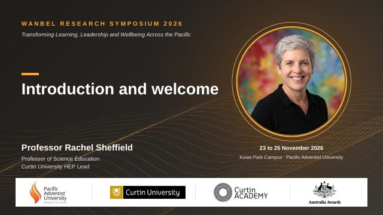
Professor Rachel Sheffield, Curtin University
Open slides (PDF, 14 slides, 0.8 MB) ↗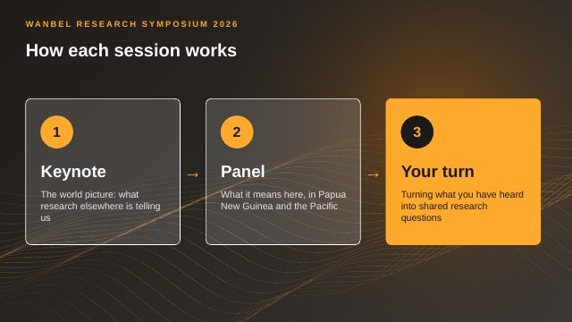
Dr Craig Sims, MC
Open slides (PDF, 2 slides, 0.2 MB) ↗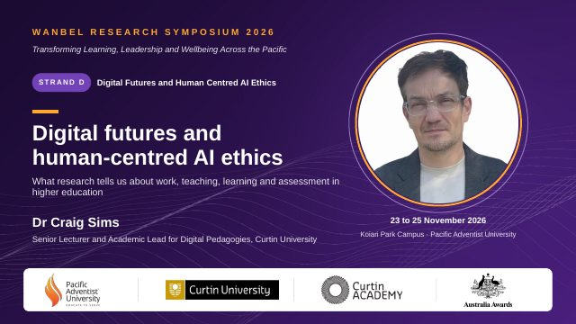
Dr Craig Sims, Curtin University
Open slides (PDF, 22 slides, 0.8 MB) ↗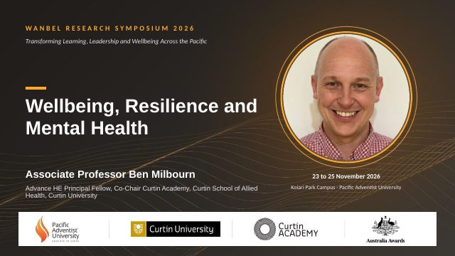
Associate Professor Ben Milbourn, Curtin University
Open slides (PDF, 60 slides, 2.2 MB) ↗Day 2 · Tuesday 24 November
Strand A, Strand C, the SoTL panel and research cluster workshops.
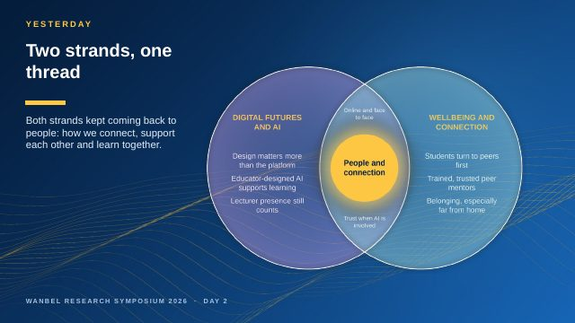
Dr Craig Sims, MC
Open slides (PDF, 4 slides, 0.7 MB) ↗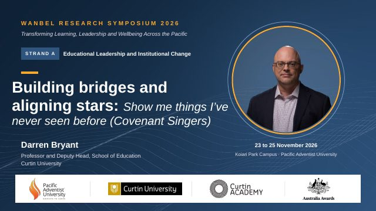
Professor Darren Bryant, Curtin University
Open slides (PDF, 34 slides, 6.2 MB) ↗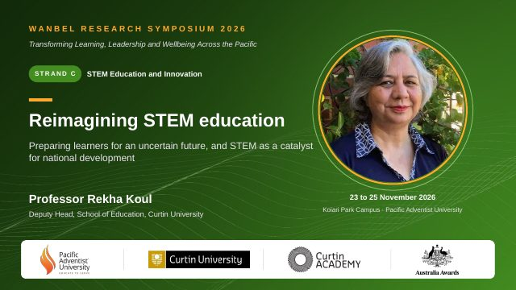
Professor Rekha Koul, Curtin University
Open slides (PDF, 22 slides, 0.7 MB) ↗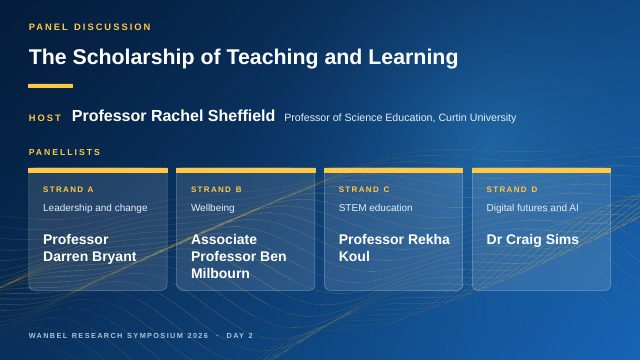
Hosted by Professor Rachel Sheffield
Open slides (PDF, 2 slides, 0.1 MB) ↗Day 3 · Wednesday 25 November
Student research presentations, SMTE 2027, cluster planning and the closing ceremonies.
Student research presentations
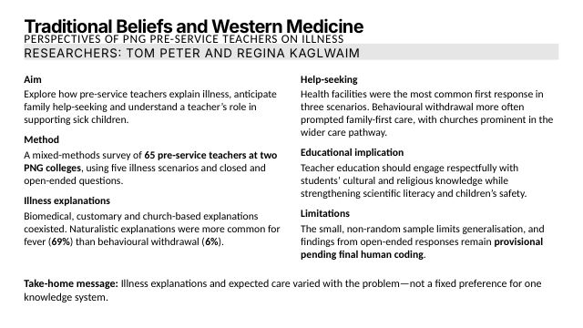
Regina Kaglwaim and Tom Peter
Curtin University, Master of Education
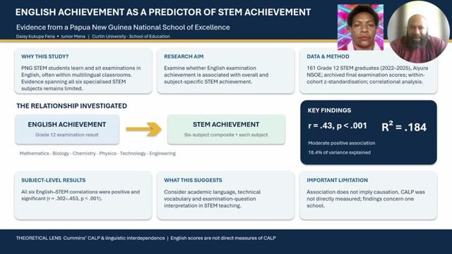
Daisy Kukupa Fena and Junior Mena
Curtin University, Master of Education
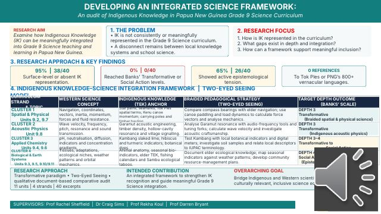
Louisa Opu and Selina Kangei
Curtin University, Master of Education
Listen to audio (2.7 MB) ↗
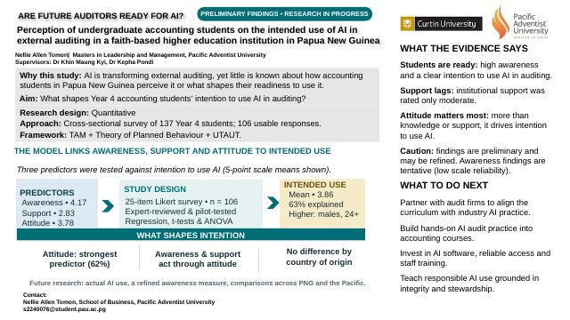
Nellie Allen Tomon
Pacific Adventist University
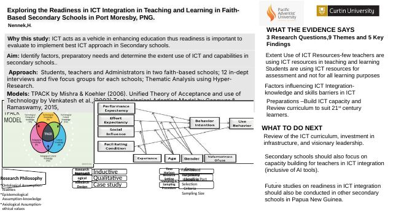
Hilda Nennek
Pacific Adventist University
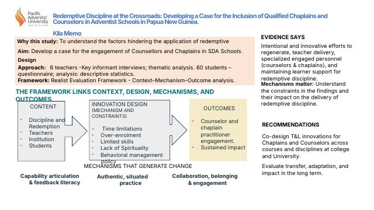
Kila Memo
Pacific Adventist University
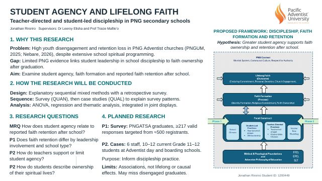
Jonathan Riroriro
Pacific Adventist University
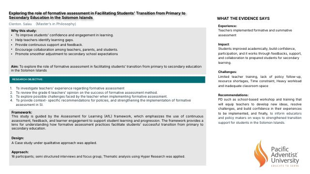
Clenton Salau
Pacific Adventist University
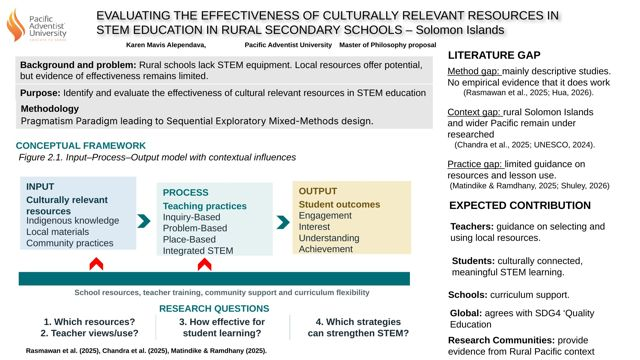
Karen Mavis Alependava
Pacific Adventist University
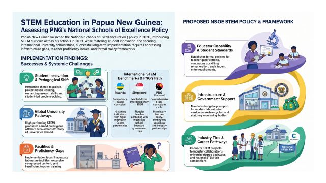
Dulcie Motamota
Pacific Adventist University
Photos
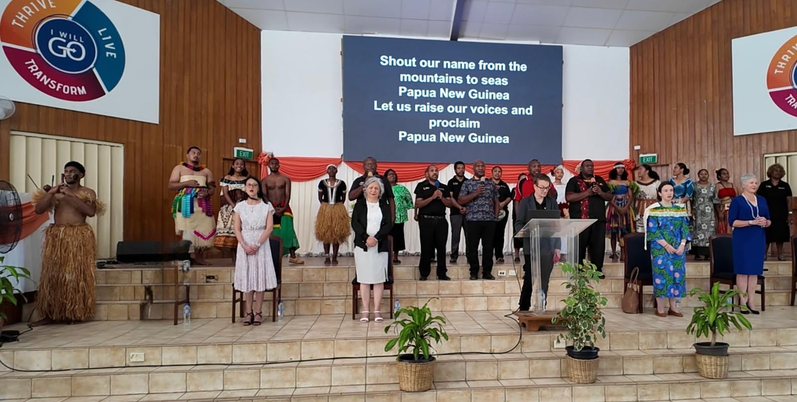


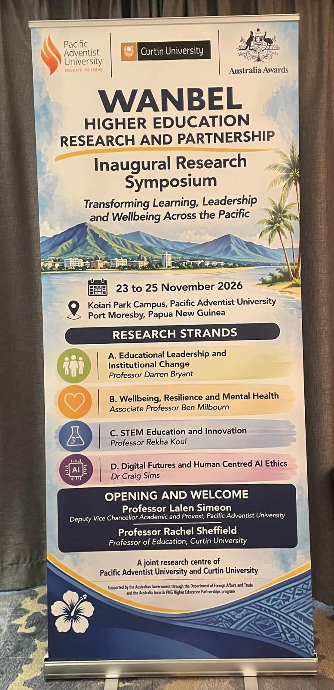